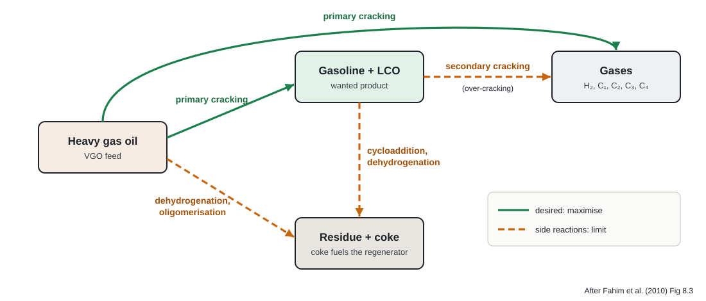
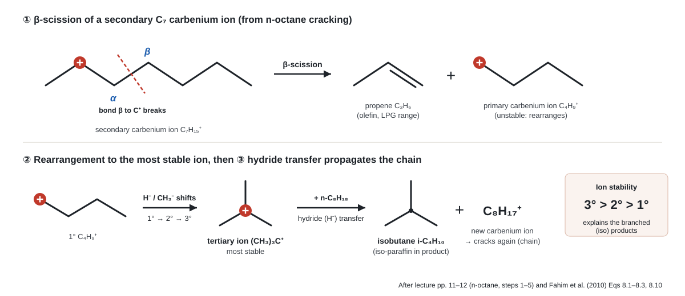

Chapter 04 · chemistry
Reactions and reaction mechanism
What cracks into what, heat effects, and the carbenium-ion chain for n-octane, step by step.
4.1Reaction network

- Primary cracking: VGO → gasoline + LCO (desired). Secondary (limit): H-transfer lowers gasoline yield; cycloaddition → coke. Bp. 202
- Large molecules → smaller fragments with double bonds; H balance kept by H-transfer, cyclisation, aromatisation. Lp. 9
- Basic reaction: C–C scission of paraffins, cycloparaffins, aromatic side chains → olefins + smaller paraffins; some aromatics + olefins condense to coke. Lp. 24
4.2Reactions by hydrocarbon type
| Feed molecule | Reactions → products | Reactivity Lp. 11 |
|---|---|---|
| Paraffins | Cracking → paraffins + olefins | Rate ↑ with C number, but coke ↑ too; gas rich in C₃, C₄ |
| Olefins | Cracking → LPG olefins · isomerisation → branched olefins/paraffins · H-transfer → paraffins · cyclisation → naphthenes → coke | Much faster than paraffins; isomerise rapidly |
| Naphthenes | Cracking → olefins · dehydrogenation → aromatics · isomerisation | Faster than matching paraffins |
| Aromatics | Side-chain cracking → aromatics + olefins · transalkylation · dehydrogenation → polyaromatics → coke | Ring survives; side chains off by β-scission |
\[ \ce{C_{n}H_{2n+2} -> C_{m}H_{2m+2} + C_{p}H_{2p}} \quad (n = m + p) \qquad \text{e.g. } \ce{n-C10H22 -> n-C7H16 + C3H6} \]
paraffin\[ \ce{1-C8H16 -> 2 C4H8} \qquad\quad \ce{C6H5-CH2CH3 -> C6H6 + CH2=CH2} \]
olefin · (8.5) dealkylation\[ \underbrace{\ce{3 C_{n}H_{2n}}}_{\text{olefin}} + \underbrace{\ce{C_{m}H_{2m}}}_{\text{naphthene}} \ce{->} \underbrace{\ce{3 C_{n}H_{2n+2}}}_{\text{paraffin}} + \underbrace{\ce{C_{m}H_{2m-6}}}_{\text{aromatic}} \]
(8.7) H-transferReactive olefins → stable P + A; lowers gasoline olefins, adds coke; strong on zeolites. BEq. 8.7, p. 205
\[ \text{aromatics, cyclo-olefins} \xrightarrow[\text{alkylation, condensation, polymerisation}]{\text{H loss}} \text{coke} \]
(8.8) cokeH given up saturates olefins → paraffins (Eq. 8.9). BEqs 8.8–8.9
4.3Heat effects
| Type | Example (Table 8.3) | Heat | |ΔH|, BTU/mol |
|---|---|---|---|
| Cracking | \(\ce{n-C10H22 -> n-C7H16 + C3H6}\) | endo (+) | 32,050 |
| H-transfer | \(\ce{4 C6H12 -> 3 C6H14 + C6H6}\) | exo (−) | 109,681 |
| Isomerisation | 1-butene → trans-2-butene | mildly exo | 4,874 |
| Cyclisation | 1-heptene → methylcyclohexane | exo (−) | 37,980 |
| Dealkylation | cumene → benzene + propylene | endo (+) | 40,602 |
| Dehydrogenation | \(\ce{n-C6H14 -> 1-C6H12 + H2}\) | endo (+) | 56,008 |
| Transalkylation | benzene + m-xylene → 2 toluene | ≈ 0 | 221 |
Magnitudes BTable 8.3 (Sadeghbeigi, 2000); signs Lp. 10
4.4Carbenium ion formation
- Lewis acids (BF₃, AlCl₃, FeCl₃) also add to olefins → ion. Ion lifetime: fraction of a second to minutes. Lp. 10
- Stability 3° > 2° > 1° → ions rearrange to 3° → branched products. Lp. 11
- Name: lecture "carbonium" = book "carbenium" (modern term); both mean the positive, three-bonded carbon here. Lp. 9 Bp. 204
4.5Mechanism: cracking n-octane
Initiation: mild thermal cracking makes the first olefin
\[ \ce{n-C8H18 -> CH4 + CH3(CH2)4CH=CH2} \]- Gives methane + 1-heptene — the olefin the acid site can protonate. Lpp. 11–12 BEq. 8.1
Proton addition on a Brønsted site
\[ \ce{CH3(CH2)4CH=CH2 + H+ ->[\text{zeolite}] CH3(CH2)4CH^+CH3} \]β-scission: bond β to the charge breaks
\[ \ce{CH3CH^+CH2CH2CH2CH2CH3 -> CH3CH=CH2 + {}^{+}CH2CH2CH2CH3} \]Rearrangement to the most stable ion
\[ \ce{{}^{+}CH2CH2CH2CH3 -> CH3CH^+CH2CH3 -> (CH3)3C^+} \]- Hydride/methyl shifts: 1° → 2° → 3° — source of iso-paraffins in gasoline + LPG. Lpp. 11–12 BEq. 8.10
Hydride transfer: chain propagates
\[ \ce{(CH3)3C^+ + n-C8H18 -> (CH3)3CH + C8H17^+} \]Termination
\[ \ce{R^+ -> R'CH=CH2 + H+} \qquad \ce{R^+ + H^- -> RH} \]- Ion returns H⁺ to catalyst → olefin; or takes H⁻ from a donor (e.g. coke) → paraffin. Bp. 204

4.6Secondary reactions → product quality
\[ \ce{R-CH2-CH2-CH^+-CH3 -> R-CH2-C^+(CH3)-CH3} \]
(8.10) isomerisation2° → 3° ion; paraffins + olefins → iso-paraffins. BEq. 8.10
- Cyclisation: olefins → naphthenes → possibly coke. BEq. 8.11, p. 206 H-transfer drives secondary cracking of gasoline. Bp. 205
- On zeolites: \(\ce{O + N -> P + A}\), \(\ce{O -> P + A}\), cyclo-olefins → N + A → fewer olefins, more P + A. Lp. 13
- So: branched (3° ions) → octane ↑, more isobutane · aromatics (naphthene dehydrogenation, H-transfer) → octane ↑ · C₃/C₄-rich gas Lp. 11 · coke = regenerator fuel, but excess lowers yields.
4.7Quick check
β-scission of the 2-heptyl ion?
\(\ce{CH3CH^+CH2CH2CH2CH2CH3 -> CH3CH=CH2 + {}^{+}CH2CH2CH2CH3}\); the butyl ion then rearranges to tert-butyl. BEq. 8.3
Why so much isobutane?
Butyl → stable (CH₃)₃C⁺ → takes H⁻ from a paraffin → isobutane; zeolite H-transfer adds more. Lpp. 12–13
Net reaction endo or exo?
What stops the chain?
Ion loses H⁺ (→ olefin) or gains H⁻ from a donor such as coke (→ paraffin). Bp. 204